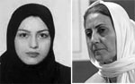

پذيرش > سایت نوشته ها > زندان براي دو فعال حقوق زنان
 همزمان با اعتراض 13 سازمان جهاني به سرکوب فعالان ايراني همزمان با اعتراض 13 سازمان جهاني به سرکوب فعالان ايراني

 زندان براي دو فعال حقوق زنان زندان براي دو فعال حقوق زنان
19 آبان 1387 - روزآنلاین / سارا مقدم - نسخه قابل چاپ
درحالي که 13 سازمان بين المللي دفاع از حقوق زنان و حقوق بشر، با ابراز نگراني از افزايش فشار و سرکوب فعالان زن در ايران، از حکومت ايران خواستار توقف اين سرکوبها شده اند، احکام دو فعال حقوق زن ديگر نيز با محکوميتهاي زندان تعليقي تاييد شده است.
دربيانيه اي که متن آن در پايان همين خبر آمده است، اين سازمانها به دولت ايران به خاطر افزايش فشار بر فعالان زن اعتراض کرده و هشدار داده اند که اگر مي خواهد به تعهداتش در پيمان نامه هاي بين المللي که عضو آن است پايدار بماند، سازمان هاي جامعه مدني بايد اجازه مراوده آزادانه و مسافرت براي شرکت در کنفرانس هاي بين المللي را داشته باشند.
اين در حالي است که هفته گذشته دادگاه تجديد نظر محکوميت معصومه ضيا، فعال جنبش زنان را به دليل حضور در تجمع مسالمت آميز زنان در 22 خرداد 85 در ميدان هفت تير با تغيير به سه سال حبس تعليقي و معرفي هر چهار ماه يک بار به مراجع انتظامي و قضايي تاييد کرده است. فريده غيرت با ابراز تاسف از صدور چنين حکمي به روز مي گويد: اين حکم از سوي شعبه 28 دادگاه انقلاب براي اتهام اقدام عليه امنيت ملي براي موکلم خانم معصومه ضيا صادر شده و حکمي بسيار سنگين و شديد است و درواقع ايشان اولين موکل بنده از جمع فعالان حقوق زنان است که چنين حکمي دريافت کرده است و با توجه به اينکه اين پرونده نخستين پرونده ايشان است، حکم بسيار سنگيني است.
رضوان مقدم فعال ديگر زن، که قبلا حکم ده ضربه شلاق و 6 ماه حبس تعزيري دريافت کرده بود، در دادگاه تجديد نظر، حکمش به سه سال تعليق تبديل شد. عبدالفتاح سلطاني وکيل وي در گفت و گو با سايت تغيير براي برابري اين حکم را غير قانوني خواند و گفت : رسيدگي به اتهام اخلال در نظم عمومي در صلاحيت دادگاه انقلاب نيست و بايد در دادسراي عمومي به اين اتهام رسيدگي شود که عملا به اين اعتراض توجهي نشده است. از سوي ديگر از نظر قانوني جمع شدن آرام و بي تنش چند نفر براي پيگيري دادگاه دوستانشان مقابل دادگاه انقلاب که منجر به بازداشت موکل من و 33 زن ديگر در 13 اسفند سال گذشته شد، جرم محسوب نمي شود و نمي توان آن را مصداق اخلال در نظم عمومي شمرد. بنابراين دفاع اساسا کل اتهام منتفي است که مورد توجه قاضي پرونده قرار نگرفته است.
همچنين انتشار خبري از سوي خبرگزاري جمهوري اسلامي در روز جمعه، نشان از افزايش فشار به خانواده عشا مومني، زن زنداني عضو کمپين يک ميليون امضا دارد. در اين خبر ايرنا به نقل از پدر عشا مومني از فعاليتهاي او در کمپين يک ميليون امضا به دليل عدم اطلاع از غير قانوني بودن اين فعاليتها ابراز تاسف کرده و عنوان داشته بود که به دليل با خبر شدن از ماهيت غير قانوني اين فعاليتها، وي و مادر عشا به ملاقات دخترشان نرفته اند. وي تمام مصاحبه هاي خود با رسانه هاي ديگر را که در آنها از فعاليتهاي دخترش حمايت کرده بود، پس گرفته است.
فعالان زن در ايران، اين برخورد با خانواده عشا مومني را نشانه اي از افزايش فشار برخانواده ها به قصد همه گونه همکاري با حکومت، مي دانند. اين در حالي است که پيش از اين نسرين ستوده اعلام کرده بود که بازداشت عشا مومني غير قانوني است و مهمترين ايرادي که به اين بازداشت وارد است اين است که اساسي ترين تشريفاتي که براي بازداشت يک متهم بايد رعايت شود در نظر گرفته نشده است. يعني هيچ احضاريه اي با رعايت مهلت قانوني به دست متهم نرسيده است و ماموران به عنوان گشت نامحسوس ترافيک مانع حرکت او در مسير مي شوند و وي را بازداشت مي کنند. اين برخورد غير شفاف يکي از مهمترين ايرادات حقوقي است که در مورد پرونده عشا مومني هم مصداق دارد.
برخوردهاي اخير با فعالان زن که شامل تفتيش منازل، ممنوع الخروجي، ضبط وسايل و کامپيوترهاي شخصي زنان و تاييد احکام حبس يا معرفي هر چهارماه يک ماه ايشان به مراجع قضايي يا امنيتي است، بازتابهاي گسترده اي در بين مدافعان حقوق بشر نيز داشته است.
در آخرين واکنش به برخوردهاي اخير، سيزده سازمان معتبر مدافع حقوق بشر با انتشار بيانيه اي از وضعيت موجود ابراز نگراني کرده اند. در اين بيانيه آمده است:
حکومت ايران در طي سه سال گذشته دست به سرکوب سيستماتيک و گسترده فعالان حقوق زنان زده است. پس از برخورد خشن و بي رحمانه با تجمع بيست و دوم خرداد 85، مقامات ايراني بسياري از مدافعان حقوق بشر زن را که در زمينه هاي مختلف براي ارتقاء برابري جنسيتي و حقوق بشر در ايران فعال بودند را بازداشت، تهديد، و بازجويي کرده و مورد پيگرد قرار داده است.
يکي از اهداف سرکوب اعضاي کمپين يک ميليون امضا هستند. کمپين حرکتي اجتماعي است که از دو سال پيش براي ارتقاء برابري جنسيتي در قوانين ايران آغاز شده است. هدف کمپين گسترش آگاهي از قوانين تبعيض آميز ايران عليه زنان با جمع آوري يک ميليون امضا در حمايت از لغو آن است.
مامورين اجراي قانون با مورد پيگرد قرار دادن حداقل چهل و پنج نفر از اعضاي کمپين عکس العمل نشان دادند. اعضاي کمپين براي نوشتن، برگزاري جلسات در منازل ( در حالي که اين امکان را در فضاي عمومي ندارند) و جمع آوري امضا محکوم شده اند. حکومت به توقيف ارعاب و منع فعالين حقوق زنان از مسافرت ادامه داده است.
در اين بيانيه اين سازمانها به شرايط موجود اعتراض کرده و گفته اند : ما شديدا به ادامه ي فشار بر اين فعالين که به خاطر فعاليت صلح آميز براي ارتقاء حقوق زنان مورد آزار قرار گرفته اند اعتراض داريم. ما از دولت ايران مي خواهيم که به آزادي اجتماع و تجمع اين فعالين احترام بگذارد. اين حقوق جزئي از اعلاميه جهاني حقوق بشر وميثاق بين المللي حقوق سياسي و مدني است که ايران نيز به آن پيوسته و قانونا ملزم به پيروي از آن است.
در اين بيانيه به بندهايي از اعلاميه جهاني مدافعان حقوق بشر منتشر شده در 9 دسامبر98 در مجمع عمومي سازمان ملل يهني ماده هاي يکم و پنجم و نهم اشاره شده است.
در 3 آبان 87، ايران حمايت خود را از محافظت از مدافعان حقوق بشر با حضور فعال در ديالوگي تعاملي در مجمع عمومي سازمان ملل و دررابطه با گزارش مخصوص سازمان ملل از مدافعان حقوق بشر اعلام کرد. ولى در دهمين سالگرد اين اعلاميه، دولت ايران اعلاميه و نفس آن را نقض مى كند.
اگر دولت ايران مي خواهد به تعهداتش در پيمان نامه هاي بين المللي که عضو آن است پايدار بماند، سازمان هاي جامعه مدني بايد اجازه مراوده آزادانه و مسافرت براي شرکت در کنفرانس هاي بين المللي را داشته باشند. از اين روخواسته هاى ما از دولت ايران چنين است : - لغو محکوميت زينب پيغمبر زاده - آزادي عشا مومني و برگرداندن وسايلش - بازگرداندن پاسپورت و ديگر وسايل ضبط شده ي سوسن طهماسبي و رفع ممنوع الخروجي وي که بارها اعمال شده - بازگرداندن وسايل پرستو الله ياري به وي و رفع اتهام از وي- پايان دادن به فشار و پيگرد تمام فعالان و مدافعان حقوق بشر در ايران که شامل اعضاي کمپين يک ميليون امضا نيز مي شود.
اين بيانيه با امضاي افراد زير از سازمانهاي نام برده شده منتشر شده است:
متيوايستون- مدير برنامه مدافعان حقوق بشر حقوق بشر نخست
سانيلا آبيسكارا- مدير اجرايى ديده بان بين المللي فعاليت حقوقي زنان، آسيا اقيانوس آرام
نهاد ابول کمسان- مدير اجرايى مركز مصرى براى حقوق زنان
سهير بالحسن - مدير فدراسيون بين المللي حقوق بشر
تاينا بين- ايمه- مدير اجرايى برابري اکنون
شارلوت بانچ- مدير اجرايى مرکز سراسري رهبري زنان
سيندي کلارک- مدير موقت انجمن حقوق زنان در توسعه
فريدة ضيف – بخش حقوق زنان ديده بان حقوق بشر
لينسي فرنسيس- هماهنگ كننده محلى مجمع آسيا، اقيانوس آرام در توسعه زنان
هادي قائمي- هماهنگ کننده کمپين بين المللي حقوق بشر در ايران
مري لالور- مدير خط اول- بنياد بين المللي براي محافظت از مدافعان حقوق بشر
ويرادا سومسوادى- رئيس بنياد زنان، توسعه ي روستايي و حقوقي اريک اسکات- دبير كل سازمان جهاني عليه شکنجه
زنان تحت قوانين اسلامي- شبکه اتحاد بين الملل
روزآنلاین
ارسال به
بالاترین
،
توییتر
،
فریندفید
،
فیسبوک
در همين بخش :
 یک خبر تلخ؟ یک قانونشکنی؟ یک تصمیم بخشنامهای جدید؟ یک خبر تلخ؟ یک قانونشکنی؟ یک تصمیم بخشنامهای جدید؟
چرا بایست به سکسوالیته پرداخت؟ / نفیسه آزاد
آزارجنسی خانگی؛ «قربانی» نه، «نجات یافته»
زنان، بزرگترین بازندگان بهار عرب
سانسور از دیدگاه جنسیتی/الهه امانی
ديگر بخش ها :
طرح یک میلیون امضا
|
مقالات
|
سایت نوشته ها
|
اخبار
|
گزارش كمپين
|
گفت و گو
|
علیه سکوت
|
كوچه به كوچه
|
نامه های شما
|
گزارش ویژه
|
گفتگو با اعضا
|
ویژه سالگرد کمپین
|
تصویر برابری
|
دل آرام علی
|
تریبون
|
مقالات
|
تاریخ شفاهی
|
خارج از چارچوب
|
کتابخانه
|
درباره کمپین
|
کمپین در شهرها
|
کمپین در بند
|
صدای تغییر
|
ویژه 22 خرداد
|
لایحه حمایت از خانواده
|
گالری
|
عشا مومنی
|
امیر یعقوبعلی
|
خدیجه مقدم
|
راحله عسگری زاده و نسیم خسروی
|
پروین اردلان،جلوه جواهری، مریم حسین خواه، ناهید کشاورز
|
زینب پیغمبرزاده
|
سعیده امین، سارا ایمانیان، محبوبه حسین زاده، ناهید کشاورز و همایون نامی
|
احترام شادفر
|
نسیم سرابندی زاده،فاطمه دهدشتی
|
وبلاگ مهمان
|
پرونده خرم آباد
|
دستگیری ها
|
مریم مالک
|
پرستو اللهیاری
|
مهرنوش اعتمادی
|
سمیه رشیدی
|
Other Languages
|
همراهان
|
«فراخوان کمپین ده روز با بهاره هدایت»
| English
|